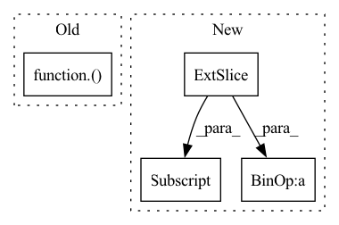

Pattern ID :11641

Before Change
igt = igt.to(device)
output = model(template, source)
loss_val = ChamferDistanceLoss()(template, output["transformed_source"])
// print(loss_val.item())
// forward + backward + optimize
optimizer.zero_grad()
After Change
+ torch.nn.functional.mse_loss(output["est_t"], translation_ab[:,:,0])
cycle_loss = torch.nn.functional.mse_loss(torch.matmul(output["est_R_"].transpose(2, 1), R_ba), identity) \
+ torch.nn.functional.mse_loss(output["est_t_"], translation_ba[:,:,0])
loss_val = loss_val + cycle_loss * 0.1
// print(loss_val.item())
// forward + backward + optimize
In pattern: SUPERPATTERN
Frequency: 3
Non-data size: 4
Instances
Fragment ID: 39472859
Project Name: vinits5/learning3d
Commit Name: 9c93ae0ba4eb39cf0fbb57bbab5b3eabf7e0134a
Time: 2020-04-12
Author: vinitsarode5@gmail.com
File Name: examples/train_dcp.py
M Class Name: AnonimousClass
N Class Name: AnonimousClass
M Method Name: train_one_epoch(4)
N Method Name: train_one_epoch(4)
M Parent Class:
N Parent Class:
M File Name: examples/train_dcp.py
N File Name: examples/train_dcp.py
M Start Line: 92
M End Line: 97
N Start Line: 96
N End Line: 107
'>
Before Change
desc: str = "Prediction",
) -> plt.Axes:
predictions, target = to_tensor(self._given_timeseries[:, feature_index]), to_tensor(target)
mse_loss = torch.nn.MSELoss()(predictions, target.to(predictions.device))
pVar = 1 - mse_loss / torch.var(target.to(mse_loss.device))
ax.plot(predictions.detach().cpu().numpy(), label=f"{desc} (pVar: {pVar.detach().cpu().item():.3f})")
ax.plot(target.detach().cpu().numpy(), label="Target")
After Change
if self.is_mean:
ax.fill_between(
np.arange(predictions.shape[0]),
to_numpy(predictions) - to_numpy(self._std_given_timeseries[:, feature_index]),
to_numpy(predictions) + to_numpy(self._std_given_timeseries[:, feature_index]),
alpha=0.2, color="blue"
)
'>
Fragment ID: 39472856
Project Name: neurotorch/neurotorch
Commit Name: f5cbdb183f2bcf570692e9c0a1f0e9c91ae63a6b
Time: 2022-09-14
Author: 50332514+JeremieGince@users.noreply.github.com
File Name: src/neurotorch/visualisation/time_series_visualisation.py
M Class Name: Visualise
N Class Name: Visualise
M Method Name: plot_single_timeseries_comparison(8)
N Method Name: plot_single_timeseries_comparison(8)
M Parent Class:
N Parent Class:
M File Name: src/neurotorch/visualisation/time_series_visualisation.py
N File Name: src/neurotorch/visualisation/time_series_visualisation.py
M Start Line: 281
M End Line: 285
N Start Line: 305
N End Line: 315
'>
Before Change
igt = igt.to(device)
output = model(template, source)
loss_val = ChamferDistanceLoss()(template, output["transformed_source"])
test_loss += loss_val.item()
count += 1
After Change
output = model(template, source)
identity = torch.eye(3).cuda().unsqueeze(0).repeat(template.shape[0], 1, 1)
loss_val = torch.nn.functional.mse_loss(torch.matmul(output["est_R"].transpose(2, 1), R_ab), identity) \
+ torch.nn.functional.mse_loss(output["est_t"], translation_ab[:,:,0])
cycle_loss = torch.nn.functional.mse_loss(torch.matmul(output["est_R_"].transpose(2, 1), R_ba), identity) \
+ torch.nn.functional.mse_loss(output["est_t_"], translation_ba[:,:,0])
loss_val = loss_val + cycle_loss * 0.1
test_loss += loss_val.item()
count += 1
'>
Fragment ID: 39472862
Project Name: vinits5/learning3d
Commit Name: 9c93ae0ba4eb39cf0fbb57bbab5b3eabf7e0134a
Time: 2020-04-12
Author: vinitsarode5@gmail.com
File Name: examples/train_dcp.py
M Class Name: AnonimousClass
N Class Name: AnonimousClass
M Method Name: test_one_epoch(3)
N Method Name: test_one_epoch(3)
M Parent Class:
N Parent Class:
M File Name: examples/train_dcp.py
N File Name: examples/train_dcp.py
M Start Line: 64
M End Line: 69
N Start Line: 62
N End Line: 73